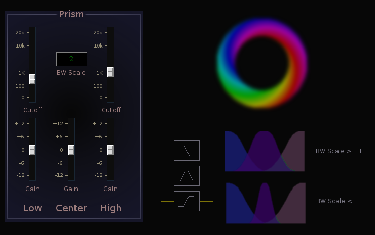

Prism

| Home | Contents | Synth Catalog | Previous: Pitch Shifter | Next: Qmod |
Prism is a three way crossover, The input signal is split into 3 components vi lowpass, bandpass and highpass filters. Each filter output is shunted to a separated output bus.
- Low cutoff - lowpass cutoff frequency
- Low Gain - lowpass output gain.
- High cutoff - highpass filter cutoff frequency
- High Gain - highpass output gain
- BW Scale - bandpass filter bandwidth
- Center Gain -bandpass filter gain
Buses:
- outbusLow - lowpass output
- outbusCenter - bandpass output
- outbusHigh - highpass output
- inbus - audio input
Parameters:
- fLow - lowpass cutoff (10 ... 20k)
- fHigh - highpass cutoff (10 ... 20k)
- bwScale - center band width scale (1/3,2/3,1,4/3,5/3,2)
- gainLow - lowpass output gain (-12 ... +12)
- gainCenter - bandpass output gain (-12 ... +12)
- gainHigh - highpass output gain (-12 ... +12)
| Home | Contents | Synth Catalog | Previous: Pitch Shifter | Next: Qmod |